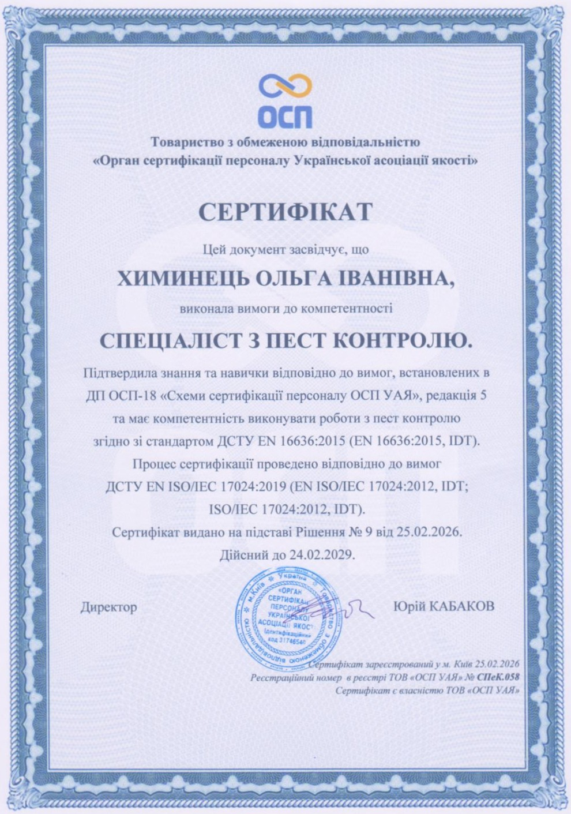
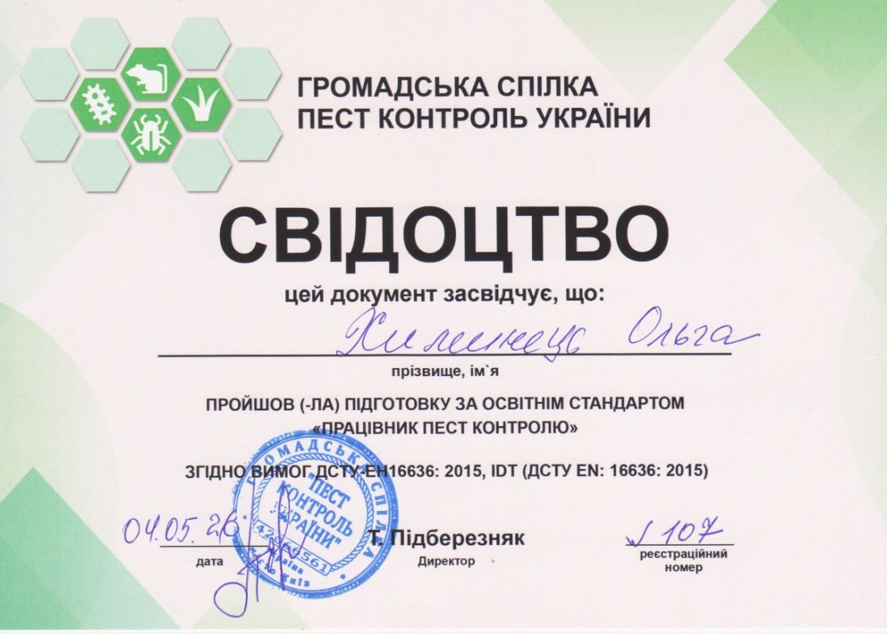

Професійний пест-контроль, дератизація, дезінсекція, промислова озонація до 5000 м² та знезараження питної води для населення, закладів HoReCa, виробництв та агросфери з видачею офіційних актів для перевірок.
НАССР стандартДСТУ EN 16636:2015
Дератизація: Професійне знищення щурів та мишей
Комплексна ліквідація гризунів у житловому секторі, ОСББ, на складах, виробництвах та об'єктах харчування Мукачева, Ужгорода та всієї Закарпатської області.
Гризуни (щури та миші) становлять серйозну загрозу санітарно-епідеміологічній безпеці: вони є переносниками лептоспірозу, сказу, сальмонельозу та туляремії, а також завдають колосальних збитків майну, перегризаючи електропроводку та псуючи запаси продукції. Звичайні побутові отрути з магазинів часто викликають у гризунів резистентність або призводять до загибелі шкідників у важкодоступних перекриттях із нестерпним запахом розкладу. Фахівці ТОВ «ПРОФДЕЗІНФЕКЦІЯ ЗАКАРПАТТЯ» застосовують науковий підхід: розробку карт локалізації нір, бар'єрні рубежі та принади з муміфікуючим ефектом.
🎯 Цільові шкідники
Сірі та чорні щури (пасюки), хатні та польові миші, миші-полівки.
⚙️ Обладнання та технології
Ударостійкі пластикові приманочні станції із замком-ключем від дітей і свійських тварин, живоловки, клейові монітори.
🧪 Застосовувані препарати
Сертифіковані родентициди 2-го покоління (бродіфакум, флокумафен) з муміфікуючим компонентом, що унеможливлює трупний запах.
📋 Документація для бізнесу
Договір, офіційний акт виконаних робіт, схема розташування приманочних станцій для Держпродспоживслужби.
Безпечно для домашніх тварин завдяки спеціальним закритим контейнерам
Сезонний плановий моніторинг (весна/осінь) з підписанням контрольних листів
Терміновий виїзд бригади за 2 години при аварійній появі гризунів
Гарантія результатуГенератори туману ULV
Дезінсекція: Знищення тарганів, клопів, бліх, кліщів та ос
Професійне викорінення популяцій побутових і виробничих комах у квартирах, приватних садибах, кафе, готелях та складах.
Таргани, постільні клопи, блохи та шершні розмножуються в геометричній прогресії і мають стійку здатність ховатися в мікрощілинах меблів, електроприладів та за плінтусами. Побутові аерозолі вбивають лише окремих особин, але не діють на яєчні кладки (оотеки). Наша служба використовує професійні генератори холодного туману, які розпилюють інсектицид на мікрокраплі розміром 20–50 мікрон. Туман заповнює 100% об'єму приміщення, проникаючи за фальшпанелі, у розетки та вентиляцію, створюючи довготривалий залишковий бар'єрний шар.
ULV-генерація холодного туману, помпове точкове зрошення щілин, мікрокапсульовані гелі тривалої дії без запаху.
🛡️ Клас безпеки
IV клас малонебезпечних сполук (найбезпечніший). Дозволено для використання в закладах громадського харчування та житлових будинках.
⏱️ Режим безпеки
Експозиція приміщення — 4 години після обробки, після чого проводиться 2-годинне провітрювання. Безпечно для дітей і тварин.
Безпечне механічне та хімічне зняття гнізд ос та шершнів на горищах і фасадах
Підбір та сервісний монтаж безосколкових ультрафіолетових інсектицидних пасток для HoReCa
Гарантійне закріплення повторною контрольною обробкою за потреби
Медичний рівеньСертифіковані деззасоби МОЗ
Дезінфекція: Знезараження від вірусів, бактерій, плісняви
Протимікробна та противірусна обробка лікарень, навчальних закладів, дитячих садків, офісів, транспорту та сховищ.
Санітарне знезараження поверхонь і повітря — це надійний бар'єр проти спалахів гострих вірусних інфекцій, бактеріального забруднення (кишкова паличка, золотистий стафілокок) та небезпечних спор плісняви. Особливо актуально для приміщень із підвищеною вологістю, після затоплень або в період сезонних епідемій. Використовуємо лише ліцензовані деззасоби, внесені до Державного реєстру дезінфекційних засобів України, що не пошкоджують інтер'єр, оргтехніку та не залишають плям.
Аерозольне дисперсне зрошення дезінфектантами широкого антимікробного спектра на основі четвертинних амонієвих сполук.
🏢 Спеціалізовані об'єкти
Медичні заклади, дитсадки, школи, офісні центри, продуктовий ритейл, фури-рефрижератори та пасажирський транспорт.
📋 Санітарна звітність
Оформлення офіційних санітарних актів установленого зразка для перевірок санітарних інспекцій.
Глибоке знищення грибкових уражень на стінах і стелях перед косметичним ремонтом
Санітарна дезінфекція автомобільного транспорту, що перевозить харчові продукти
Виїзд кваліфікованого лікаря-дезінфектора для відбору проб та оцінки рівня зараження
Потужність до 5000 м²Демеркуризація ртуті
Промислова Озонація приміщень: Демеркуризація та стерилізація
Унікальне високоефективне обладнання: видалення стійких токсичних запахів, парів ртуті, спор цвілі та алергенів без хімічних слідів.
ТОВ «ПРОФДЕЗІНФЕКЦІЯ ЗАКАРПАТТЯ» володіє потужним промисловим озонатором, що генерує високу концентрацію озону для обробки просторів до 5000 кв. метрів. Озон (O3) є в 300 разів сильнішим окислювачем, ніж хлор. Він проникає крізь текстиль, шпалери, дерев'яні конструкції та бетон, окислюючи молекули запаху гарі після пожежі, тютюнового диму, сечі, трупного запаху, а також хімічно зв'язує та нейтралізує пари ртуті (демеркуризація при розбитому градуснику або лампі). Після процедури озон розпадається на звичайний чистий кисень, залишаючи свіже альпійське повітря.
⚡ Потужність озонатора
Обслуговування площ від 20 м² до 5000 м² за один сеанс (склади, торгові центри, готелі, котеджі).
🧪 Демеркуризація
Швидке й надійне видалення парів ртуті після пошкодження термометрів чи люмінесцентних ламп.
💨 Знищення запахів
Повне розкладання запаху диму, гарі після пожежі, фарби, тварин, сирості та запаху померлої людини.
🌿 Екологічність
Не залишає жодних токсичних речовин, не потребує миття меблів після процедури.
Повна дезінфекція салонів легкових авто, бусів та рефрижераторів від грибка кондиціонера
Знищення пилових кліщів і білкових алергенів — ідеальне рішення для алергіків та дітей
Суворий контроль безпеки: проведення процедури в ізольованому контурі досвідченим інженером
ДСанПіН 2.2.4-171-10Керамічні патрони
Знезараження питної води в криницях та резервуарах
Профілактична санація шахтних колодязів, гіперхлорування після паводків та монтаж дозуючих керамічних патронів багаторазового використання.
У Закарпатті шахтні криниці є основним джерелом питної води для тисяч родин. Проте під час весняних паводків або рясних дощів у воду потрапляють поверхневі зливові стоки, нітрати та бактерії групи кишкової палички (E. coli), що загрожує спалахами гострої дизентерії та лептоспірозу. Наші лікарі-дезінфектори проводять повний комплекс санації: відкачування каламутної води, механічне очищення стінок і дна від мулу, гіперхлорування та підвішування спеціального керамічного патрона тривалої дії, який забезпечує постійне дозоване знезараження на наступні 30–35 днів.
⚠️ Показання до санації
Каламутність, поява запаху болота або сірководню, потрапляння паводкових вод, позитивний бакпосів на кишкову паличку.
⚙️ Технологія та обладнання
Дренажний насос для відкачки, очищення стінок розчином хлорного вапна, дозуючий керамічний патрон на 5 м³ води.
🛡️ Параметри безпеки
Залишковий активний хлор на рівні 0.3–0.5 мг/дм³ згідно державних санітарних норм (вода повністю безпечна для пиття).
📅 Періодичність обслуговування
Рекомендовано проводити планове профілактичне знезараження двічі на рік: навесні та восени.
Встановлення надійного багаторазового керамічного патрона з інструкцією лікаря
Дезінфекція накопичувальних баків, гідрофорів та пожежних резервуарів
Експрес-консультація та супровід лікаря-дезінфектора щодо збереження якості колодязя
Агро & ЛогістикаФумігація та знезараження
Захист запасів та фумігація: Елеватори, склади, ангари
Професійний санітарний захист зернових культур, борошна, насіння та готової продукції від шкідників хлібних запасів.
Шкідники хлібних запасів (комірний довгоносик, хлібний точильник, борошняний хрущак, хлібна міль) здатні знищити до 20–40% зібраного врожаю зерна або зробити його непридатним до експорту та переробки. ТОВ «ПРОФДЕЗІНФЕКЦІЯ ЗАКАРПАТТЯ» здійснює вологу та аерозольну газацію порожніх зерносховищ, силосних веж, приміщень млинів і комбікормових заводів перед прийманням нового врожаю. Забезпечуємо повне дотримання технологічних регламентів з безпеки праці та наданням повного пакету актів для Державної служби з питань безпечності харчових продуктів.
Закарпатська область належить до зон підвищеної активності іксодових кліщів, які є небезпечними переносниками бореліозу (хвороби Лайма) та кліщового енцефаліту. Сезонний пік активності припадає на весну (квітень–червень) та початок осені. Професійна акарицидна обробка проводиться за допомогою бензинових ранцевих обприскувачів та термогенераторів, які створюють суцільне дрібнодисперсне покриття трави, чагарників та нижнього ярусу дерев. Вже через 2 години після завершення робіт і висихання препарату територія цілком безпечна для ігор дітей та вигулу домашніх улюбленців.
Знищення кліщів до 99% на всій обробленій ділянці з гарантією безпечного відпочинку
Безпечні препарати, які не шкодять декоративним рослинам, плодовим деревам та газонам
Спеціальні умови для туристичних комплексів та фермерських садівництв
★ ФЛАГМАНСЬКИЙ НАПРЯМОК ДЛЯ B2BДСТУ EN 16636:2015Наказ Мінагрополітики №590
Комплексний Пест-контроль за системою НАССР (HACCP)
Повний юридичний та практичний супровід ресторанів, готелів, пекарень, супермаркетів та харчових заводів Закарпаття з бездоганним проходженням перевірок Держпродспоживслужби.
Згідно із Законом України «Про основні принципи та вимоги до безпечності та якості харчових продуктів», кожен оператор ринку харчових продуктів зобов'язаний мати впроваджені постійно діючі процедури пест-контролю на основі принципів НАССР. Відсутність програми контролю шкідників або ведення фіктивної документації загрожує підприємству штрафами до 150 000 грн або зупиненням діяльності закладу. ТОВ «ПРОФДЕЗІНФЕКЦІЯ ЗАКАРПАТТЯ» бере на себе 100% турбот: від первинного аудиту приміщень до щомісячного обслуговування із заповненням контрольних чек-листів та журналів моніторингу.
🗺️ 1. Карта пест-контролю
Індивідуальна схема розміщення приманочних станцій гризунів, пасток комах та безосколкових інсектицидних ламп по зонах ризику.
⚖️ 2. Юридичний супровід
Офіційний договір, щомісячні акти виконаних робіт, сертифікати якості на всі препарати згідно вимог стандарту EN 16636:2015.
🔍 3. Регулярний моніторинг
Планові візити лікаря (щомісячно або щоквартально) з ревізією кожної точки контролю та фіксацією динаміки в журналі НАССР.
🛡️ 4. Гарантія перевірок
100% успішне проходження державних аудитів Держпродспоживслужби та міжнародних аудитів торгових мереж.
Безпечні методи обробки без зупинки виробничих ліній та роботи кухні
Аварійний виїзд фахівця протягом 2–4 годин у будь-яку точку Мукачева та Ужгорода
Персональний лікар-дезінфектор закріплюється за кожним об'єктом
Офіційна кваліфікація
Сертифікати та дозвільні документи
ТОВ «ПРОФДЕЗІНФЕКЦІЯ ЗАКАРПАТТЯ» працює офіційно та відповідає європейському стандарту якості послуг пест-контролю ДСТУ EN 16636:2015. Натисніть на документ для збільшення.

Переглянути оригінал
ДСТУ EN 16636:2015
Сертифікат компетентності «Спеціаліст з пест контролю»
Виданий ТОВ «Орган сертифікації персоналу Української асоціації якості» (ОСП УАЯ) відповідно до вимог стандарту ДСТУ EN ISO/IEC 17024:2019.

Переглянути оригінал
Пест Контроль України
Свідоцтво про підготовку «Працівник пест контролю»
Видане Громадською Спілкою «Пест Контроль України» за освітнім стандартом згідно вимог ДСТУ EN 16636:2015 (EN 16636:2015, IDT).